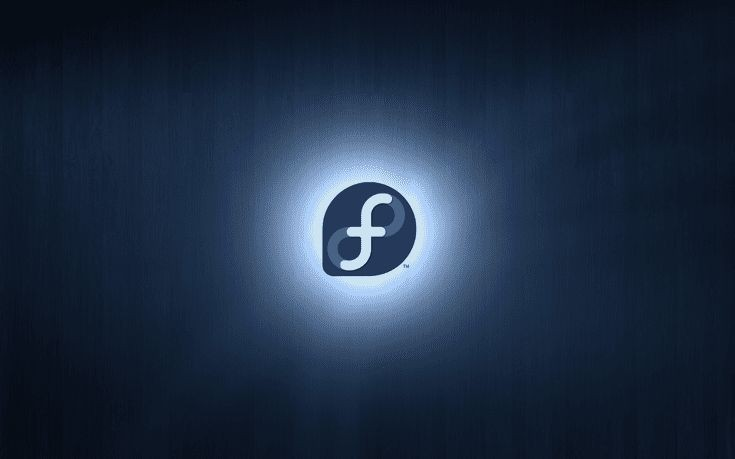

Fedora es una distribución Linux para propósitos generales basada en RPM, que se caracteriza por ser un sistema estable, la cual es mantenida gracias a una comunidad internacional de ingenieros, diseñadores gráficos y usuarios que informan de fallos y prueban nuevas tecnologías. Cuenta con el respaldo y la promoción de Red Hat. El proyecto no busca sólo incluir software libre y de código abierto, sino ser el líder en ese ámbito tecnológico. Algo que hay que destacar es que los desarrolladores de Fedora prefieren hacer cambios en las fuentes originales en lugar de aplicar los parches específicos en su distribución, de esta forma se asegura que las actualizaciones estén disponibles para todas las variantes de Linux. Max Spevack en una entrevista afirmó que: “Hablar de Fedora es hablar del rápido progreso del software libre y de código abierto.” Durante sus primeras 6 versiones se llamó Fedora Core, debido a que solo incluía los paquetes más importantes del sistema operativo. De acuerdo a DistroWatch, Fedora es la sexta distribución de Linux más popular, por detrás de Linux Mint, Debian, Manjaro, Ubuntu y openSUSE.
